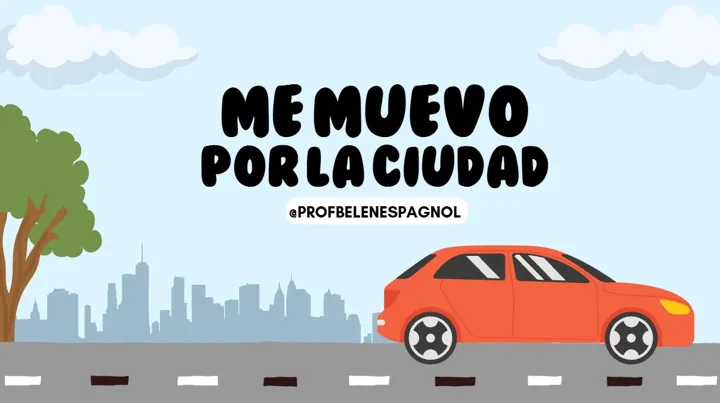
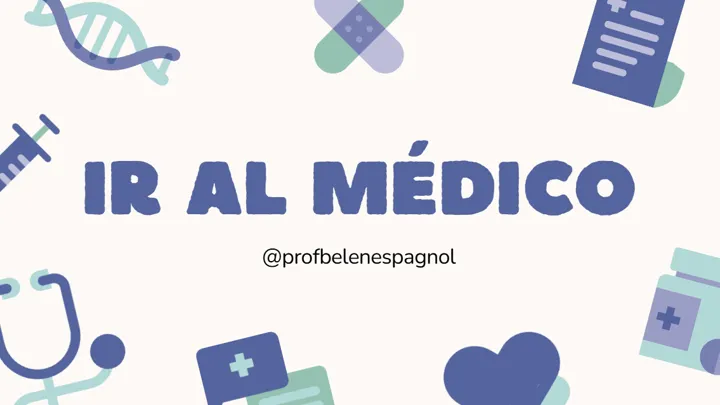

✦
Un élèveen voyage en Espagne
J'ai discuté football, de la chaleur en Espagne… et des plats typiques de Madrid 😂
Que de sujets abordés en une semaine !
Commander, demander ton chemin, réserver, discuter avec les gens du coin : je t'aide à te débrouiller en espagnol avant ton prochain voyage en Espagne ou en Amérique latine, avec des cours en ligne pensés pour les situations réelles.
Réserver mon appel découverte → ¡Buen viaje!
¡Buen viaje!
Ce programme prépare les voyageurs francophones à se débrouiller en espagnol en quelques semaines : situations pratiques (aéroport, hôtel, restaurant, transports, santé), phrases clés, compréhension des accents et confiance pour échanger avec les habitants.
On travaille chaque scène comme une répétition générale, avec les supports utilisés en cours.



Pour un voyage en Espagne, l'idéal est de commencer 6 à 10 semaines avant, à raison d'une ou deux séances par semaine. C'est suffisant pour un débutant motivé qui veut se débrouiller dans les situations courantes.
Tu pars dans moins d'un mois ? On peut faire un programme express centré sur l'essentiel. Tu veux aller plus loin et vraiment discuter avec les habitants ? Le cours de conversation prendra le relais.
Pour une estimation plus précise selon ton niveau, lis aussi : combien de temps pour apprendre l'espagnol.
De vrais messages reçus sur WhatsApp. Voir tous les témoignages
J'ai discuté football, de la chaleur en Espagne… et des plats typiques de Madrid 😂
Que de sujets abordés en une semaine !
Ça va venir et je suis confiant pour mon prochain voyage en Espagne ! Grâce à toi. MERCI
He hecho mi primer pedido en español por teléfono! 😄
Oui. En quatre semaines intensives, on se concentre sur les situations clés du voyage (se présenter, commander, demander son chemin, gérer un imprévu). Tu partiras avec des réflexes et beaucoup plus d'assurance.
Oui, on se comprend parfaitement. Il existe des différences de vocabulaire et d'accent, que Belén t'explique selon ta destination.
Un minimum, oui, mais au service de la communication : les verbes et structures utiles pour demander, proposer et comprendre. Pas de tableaux de conjugaison sans fin.
Oui. On adapte le vocabulaire et les accents au pays (Mexique, Argentine, Colombie, Pérou…) et aux situations propres à un long voyage.
Bien sûr. Beaucoup d'élèves reviennent motivés après un voyage et poursuivent avec le cours de conversation pour aller plus loin.
Réserve ton appel découverte : on parle de ton objectif, de ton niveau, et je te dis honnêtement comment je peux t'aider.